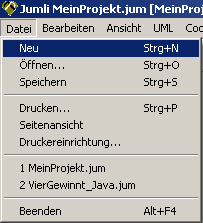
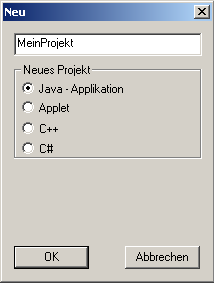
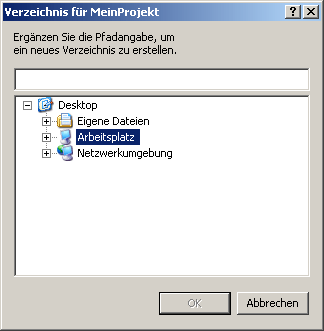
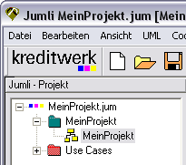

Ein neues Projekt |
|
|  |
Wenn Sie sich mit der Maus innerhalb des PopUp-Menüs bewegen, verschiebt sich der blaue Balken.
Ein Menüpunkt ist dann ausgewählt, wenn er blau ist. Sie wählen den Menüpunkt "Neu" und klicken einmal darauf. Nun öffnet sich ein neues, kleineres Fenster. |
Welche Programmiersprache? |
|
|  |
Hier geben Sie zuerst den Namen Ihres Projekts in das weiße Eingabefeld oberhalb der Auswahlliste ein.
Unserem Beispielprojekt geben wir den Namen "MeinProjekt". Dies ist nur der Name des Projekts, nicht der
späteren Klassen! Als nächstes kann nun die Programmiersprache ausgewählt werden, in der Sie programmieren möchten. Dabei können Sie sich für eine "Java-Applikation", ein "Applet", "C++" oder "C#" entscheiden, indem Sie einfach die entsprechende Sprache anklicken. Wir entscheiden uns hier für eine Java-Applikation. Jetzt nur noch auf "OK" klicken und weiter geht's! |
Wo abspeichern? |
|
|  | Im nächsten Schritt geben Sie an, wo Jumli das neue Projekt abspeichern soll.
Legen Sie sich am besten einen speziellen Ordner "JumliProjekte"an und legen Sie dort all Ihre Jumli-Projekte ab. Der obligatorische Klick auf "OK" schließt sich an und wir kommen zum nächsten Schritt. |
Der Tree-View! |
|
|  |
Im Tree-View auf der linken Seite des
Bildschirms können Sie nun sehen, dass ein Projekt namens "MeinProjekt" erstellt wurde.
Wir sehen es als gelbes Icon im Tree-View. Jedes Projekt enthält auch automatisch ein sogenanntes Package. Auch dieses ist im Tree-View aufgeführt (grünes Packagesymbol). Um zu sehen, welche Diagramme, Klassen, usw. ein solches Package enthält, müssen Sie auf das kleine Plus-Zeichen vor dem grünen Symbol klicken. Dann öffnet sich der Tree-View weiter und es erscheinen weitere Details. |